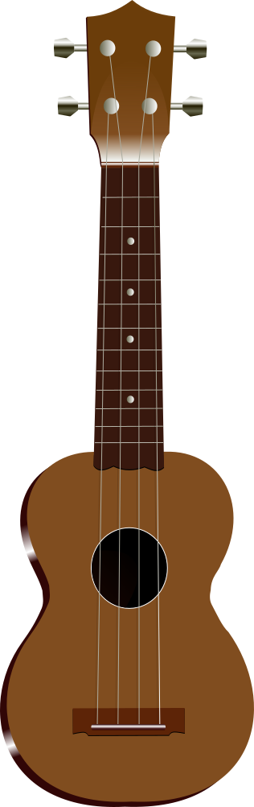

Lemon Ukulele AI - Stage 1 + 2 MVP
Upload a song, get a ukulele draft, and generate Teach Me lesson steps.
Strumming + Chords
Set your pattern first, then generate a custom ukulele mix.
Audio + AI Analysis
Upload audio and run analysis / arrangement / lesson APIs.
No result yet.
This MVP uses heuristic analysis stubs first. Next sprint: swap in Basic Pitch + Essentia/aubio modules.
Ukulele Library Player
Try local Chords, Scales, and Arpeggios directly here.

Ready.